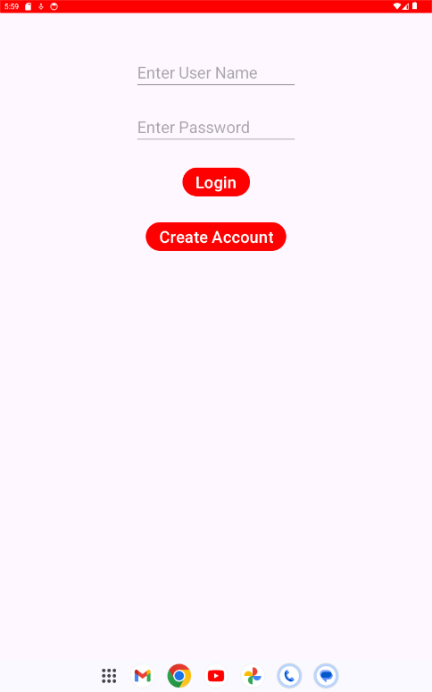
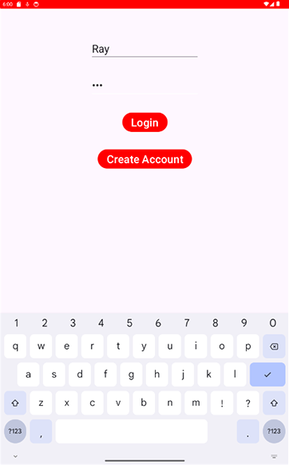
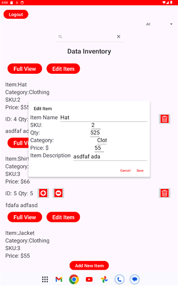
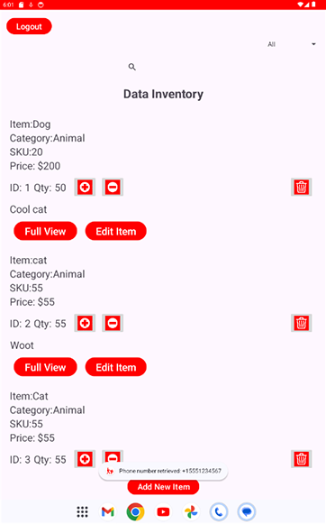
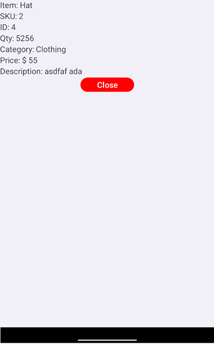
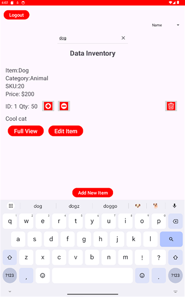
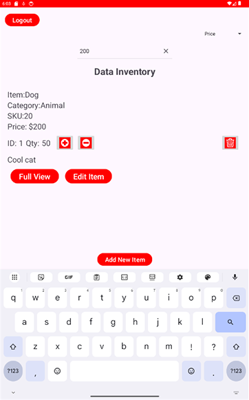

Hi, my name is Richard Wellman. I am a software engineer with extensive experience in game, mobile, and web development. In 2023, I made the decision to pursue a bachelor’s degree in computer science to enhance my competitiveness in the job market and to address knowledge gaps I had encountered as a self-taught developer. This academic journey has significantly expanded my foundation in computer science and validated the skills I’ve gained through real-world practice.
Throughout the program, I gained valuable expertise in data structures and algorithms, database management, front-end frameworks and libraries, UI/UX principles, graphic pipelines, and software engineering practices. I also became deeply familiar with Agile and SCRUM methodologies, which strengthened my ability to work effectively in team-based environments and deliver iterative improvements to software products.
In addition to my coursework, I independently studied for CompTIA A+, Network+, Security+, and CySA+, as well as the Cisco CCNA. While I did not pursue the certifications themselves, the study process provided me with a strong understanding of IT fundamentals, networking, and cybersecurity best practices. This broader knowledge base has influenced my software development approach—ensuring secure coding techniques such as input sanitization to prevent SQL injection, proper use of encryption for data at rest, and adhering to principles of encapsulation by limiting method and class visibility.
In collaborative environments, I’ve applied Agile principles to consistently test and isolate components during development, improving both software quality and team productivity. I understand the importance of communicating clearly with stakeholders, particularly when translating technical issues into business impacts or user-focused outcomes.
Much of my technical growth has also come from building and releasing my own projects, including a wide variety of games, utilities, tools, mobile apps, and static and full stack web sites. Through these projects, I’ve had to communicate with collaborators, follow Agile practices, troubleshoot bugs in complex systems, and manage full development lifecycles from concept to deployment. These hands-on experiences have taught me how to integrate robust software engineering principles in real-world settings. While my professional focus has been in game development, the principles I’ve applied—such as performance optimization, secure architecture, and engaging UX—are transferable across mobile and web platforms as well.
The projects showcased in this portfolio reflect the range and depth of my computer science skills, including secure software design, database integration, algorithmic problem solving, and user-focused application development. Each artifact demonstrates not only my technical competencies but also my ability to apply them to solve practical problems and collaborate effectively in dynamic environments. Together, they form a cohesive representation of my readiness to contribute as a professional in the computer science field.
This artifact was updated to improve the UI/UX by adding an edit button for modifying existing inventory items and a full-view mode for individual items in my Android Inventory Mobile App.
  This artifact demonstrates a real-time search function I added to the Android Inventory Mobile App. Though it uses a linear search, I found a time complexity of O(n) acceptable given typical use cases and mobile capacity.
 This artifact was updated by adding three columns—category, price, and SKU—to the SQLite database. I also implemented a spinner to enable filtered search results within the app.
 Click on the image below to visit the Inventory Mobile App GitHub Repo